CCI
CERVEJARIA CIDADE IMPERIAL · FRUTAL-MG
Manual do Usuário — Simulador FCI
Guia passo a passo de uso do sistema · Ficha de Conteúdo de Importação
| Documento | Manual de uso do Simulador FCI — todas as telas, do primeiro acesso à exportação do relatório executivo |
| Produto | Simulador FCI versão 1.0 — escopo funcional completo (RF-001 a RF-100) |
| Público | Custos · Controladoria · Fiscal/Tributário · Pricing · Compras · Industrial/PCP · SGI/CGI · Negócio · TI |
| Classificação | USO INTERNO |
Leia antes de usar. O Simulador FCI é um ambiente de simulação gerencial, sem validade
fiscal. Ele não substitui a Ficha de Conteúdo de Importação oficial, não gera transmissão a
órgão fiscal, não constitui apuração tributária e não altera nenhum cadastro do Protheus. Os
resultados apoiam decisões de custo, preço e suprimentos e estão sujeitos à validação do time
tributário (RN-12).
Sumário
1 · Para que serve o simulador
2 · Primeiro acesso e perfis
3 · Conhecendo a tela
4 · O fluxo completo em 11 etapas
5 · Passo a passo por tela
5.1 Cenários
5.2 Simulação ▸ Estrutura
5.3 Simulação ▸ Origem e conteúdo
5.4 Simulação ▸ Câmbio
5.5 Simulação ▸ Volumes e destinos
5.6 Simulação ▸ Cálculo
5.7 Simulação ▸ Validação
5.8 Simulação ▸ Alterações em massa
5.9 Simulação ▸ Governança
5.10 Comparação e análise assistida
5.11 Alertas
5.12 Relatório e exportação em PDF
5.13 Integrações (TI)
5.14 Parâmetros mestres (TI)
5.15 Permissões
5.16 Usuários (TI)
6 · Receitas de uso
7 · Perguntas frequentes
8 · Glossário
9 · Base legal
1 · Para que serve o simulador
O Simulador FCI responde a uma pergunta central: dado um conjunto de premissas de compra,
estrutura de produto, câmbio e preço de saída, qual será o CI% de cada produto e qual o
enquadramento tributário resultante?
O CI% (Conteúdo de Importação) é a razão entre a parcela importada e o denominador
parametrizado. O seu valor define o enquadramento do produto e a alíquota interestadual aplicável:
| Faixa de CI% | Enquadramento | Fator na cascata | Alíquota interestadual | FCI obrigatória |
|---|
| CI% = 0% | 100% nacional | ×0 | 7% ou 12% conforme destino | Não |
| 0% < CI% ≤ 40% | Nacional com conteúdo de importação | ×0 | 7% ou 12% conforme destino | Sim |
| 40% < CI% ≤ 70% | Nacional com CI acima de 40% | ×0,5 | 4% | Sim |
| CI% > 70% | Equiparado a importado | ×1 | 4% | Sim |
Com o simulador cada área antecipa o efeito das suas decisões antes da apuração oficial:
- Compras — qual fornecedor, moeda ou origem reduz o CI% sem perder margem.
- Pricing — como preço e mix de UF alteram o denominador e, com ele, o enquadramento.
- Custos — qual composição de insumos entrega o resultado desejado.
- Fiscal/Tributário — quais produtos mudam de faixa, exigem reemissão da FCI ou entram em risco.
- Industrial/PCP e SGI/CGI — se a alteração proposta é tecnicamente viável.
- Controladoria e Negócio — consolidação do cenário para decisão executiva.
Como o CI% é calculado. O custo FCI de cada insumo é o valor total de entrada menos ICMS e
IPI (PIS e COFINS não deduzem). Insumos importados entram pelo valor aduaneiro. O cálculo
sobe em cascata — matéria-prima → produto intermediário → produto acabado — aplicando a cada nó o
fator da sua faixa (0 · 0,5 · 1). A parcela importada resultante é dividida pelo denominador, que
por padrão é a média ponderada global das saídas interestaduais.
2 · Primeiro acesso e perfis
Acesse o endereço informado pela TI e entre com o seu e-mail corporativo e a senha recebida.
No primeiro acesso, peça à TI a troca da senha inicial.
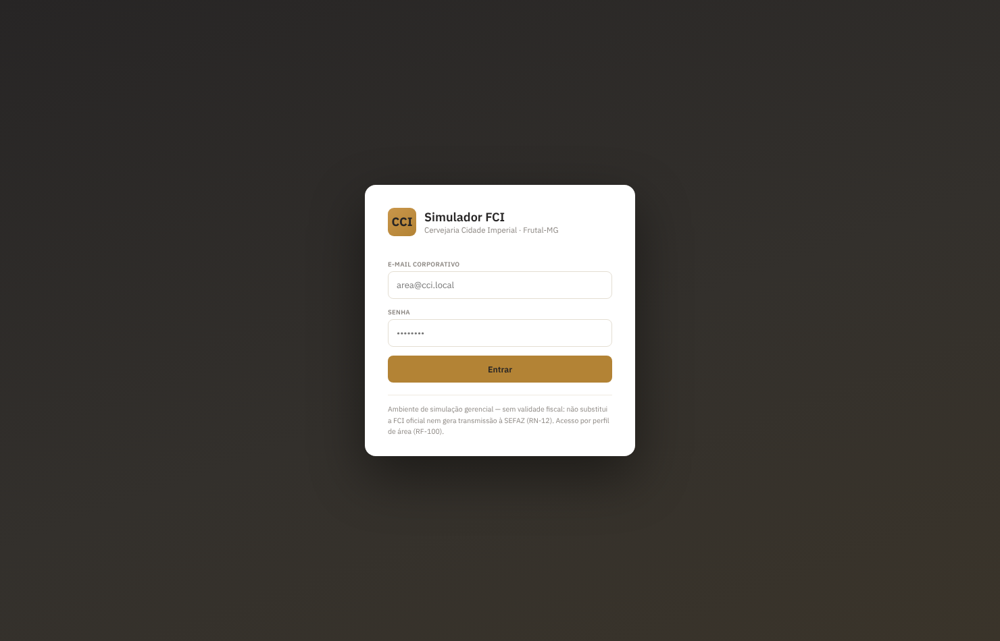
Figura 1 — Tela de acesso. O aviso de ambiente sem validade fiscal acompanha o sistema em todas as telas.
O que você pode fazer depende da área à qual o seu usuário pertence. Cada área tem um
perfil com um conjunto de permissões:
| Área | Perfil | O que faz no simulador |
|---|
| Custos | Simulador | Abre cenários, define premissas, calcula e consolida para decisão |
| Controladoria | Validador | Valida, aprova, congela premissas e define a base de cálculo do denominador |
| Fiscal / Tributário | Simulador | Classifica origem, CST e conteúdo de importação; avalia enquadramento e reemissão |
| Pricing | Simulador | Mantém preço de saída, volumes e mix de UF de destino |
| Compras | Simulador | Mantém fornecedor, FOB, frete e seguro internacional, contratos e moeda |
| Industrial · PCP | Especialista | Altera a estrutura e a receita padrão em modo avançado; valida tecnicamente |
| SGI / CGI | Validador | Valida tecnicamente alterações de estrutura e aprova cenários avançados |
| Negócio | Aprovador | Aprova e consolida o cenário para decisão executiva |
| TI | Administrador | Configura integrações, fontes de dados e parâmetros mestres |
Quando um botão aparece desabilitado, passe o mouse sobre ele: o sistema informa qual
permissão falta e quais áreas podem executar aquela ação. Nada fica escondido — o acesso de
consulta é sempre liberado. A matriz completa está na tela Permissões (seção 5.15).
3 · Conhecendo a tela
A interface tem três regiões fixas:
- Menu lateral (esquerda) — agrupa Simulação (Cenários, Simulação, Comparação,
Alertas, Relatório) e Dados mestres (Integrações, Parâmetros, Permissões, Usuários).
No rodapé aparece o seu perfil ativo e o botão de encerrar a sessão.
- Barra superior — título da tela, o cenário em contexto com o seu status e o sino de
alertas com a quantidade pendente.
- Área de trabalho — o conteúdo da tela selecionada.
Dentro da Simulação há ainda uma faixa fixa com o produto acabado em foco e o
CI% do produto, com a faixa e a alíquota resultante. Esse indicador acompanha você em todas
as abas: qualquer alteração de premissa recalcula o número imediatamente, sem comando manual.
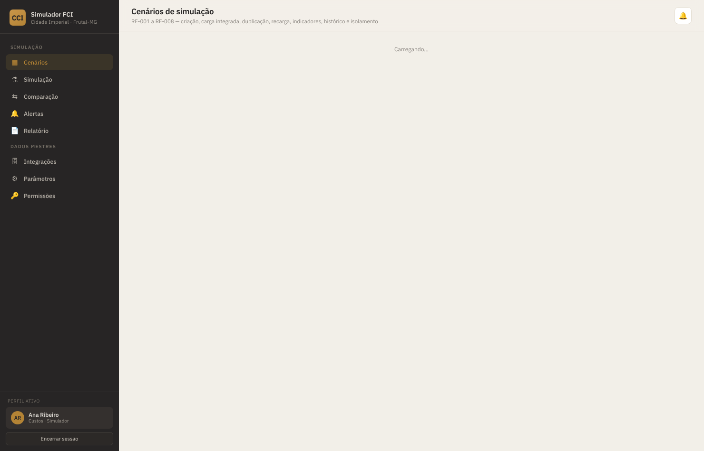
Figura 2 — Painel de cenários: menu lateral, barra superior, indicadores e os cartões de cenário.
4 · O fluxo completo em 11 etapas
O simulador materializa o processo mapeado no SIPOC do projeto. Use esta sequência como roteiro:
| Etapa | O que fazer | Onde | Quem |
|---|
| 1 | Abrir o cenário (orçamento anual ou revisão mensal) | Cenários ▸ ＋ Novo cenário | Custos · Controladoria |
| 2 | Conferir a estrutura carregada do ERP | Simulação ▸ Estrutura | Custos · PCP |
| 3 | Decompor o produto e relacionar os insumos por SKU | Simulação ▸ Estrutura | Compras · SGI/CGI |
| 4 | Classificar origem e conteúdo de importação | Simulação ▸ Origem e conteúdo | Fiscal |
| 5 | Parametrizar compra, custos de entrada e câmbio | Simulação ▸ Câmbio | Compras · Financeiro |
| 6 | Calcular o denominador (volumes e preços por UF) | Simulação ▸ Volumes e destinos | Pricing |
| 7 | Calcular o CI% consolidado em cascata | Simulação ▸ Cálculo | Simulador |
| 8 | Classificar enquadramento e impacto tributário | Simulação ▸ Cálculo | Fiscal |
| 9 | Avaliar os gatilhos de alerta | Alertas | Fiscal |
| 10 | Consolidar o cenário para decisão | Simulação ▸ Governança | Controladoria · Negócio |
| 11 | Encaminhar a decisão às áreas | Relatório ▸ Direcionamentos | Custos |
Não é obrigatório seguir todas as etapas em toda simulação. Para um what-if rápido —
“e se trocarmos esta lata?” — basta a etapa 1, a aba Estrutura e a prévia do efeito.
5 · Passo a passo por tela
5.1 · Cenários
É a porta de entrada. Cada cenário é um conjunto isolado de premissas, estrutura e
resultados. O que você altera em um cenário nunca afeta outro cenário nem o cadastro oficial.
1Criar um cenárioRF-001 · RF-002
- Clique em ＋ Novo cenário. Custos · Controladoria · TI
- Informe o nome (ex.: “Orçamento Anual 2027”), escolha o tipo
(orçamento anual ou revisão mensal) e o ciclo de referência.
- Confirme. O cenário nasce com identificador único (
CEN-001), versão 1,
status Rascunho, o seu nome como autor e a data de criação.
A lista técnica e o cadastro de insumos são carregados automaticamente das fontes
integradas — não há digitação manual de produto ou insumo. O cartão do cenário mostra quais
fontes alimentaram a carga.
2Ler os indicadores do cartãoRF-004
Cada cartão apresenta, recalculados automaticamente:
- CI% médio ponderado — média dos produtos acabados, ponderada pelos volumes de saída.
- Produtos e > 40% — total e quantos estão acima do limite que leva à alíquota de 4%.
- Barra de distribuição — quantos produtos em cada faixa (verde, âmbar, vermelho).
- Alertas e erros de validação, quando houver.
3Duplicar como nova versãoRF-003 · RF-006
O botão ⎘ no cartão cria uma cópia independente com a versão incrementada, atribuindo
você como autor e registrando a data. O cenário de origem permanece intacto — é assim que
se comparam variações (“mesmo orçamento, só muda o câmbio”).
Cenário congelado ou consolidado não aceita edição. Para alterá-lo, duplique:
a nova versão nasce em Rascunho e mantém o vínculo com a versão anterior.
5.2 · Simulação ▸ Estrutura
Mostra a cascata MP → PI → PA do produto selecionado: cada componente com quantidade,
origem, fornecedor, custo FCI unitário, CI do nó, o fator aplicado e a parcela importada.
A soma das parcelas dos componentes é exatamente a parcela importada do produto.
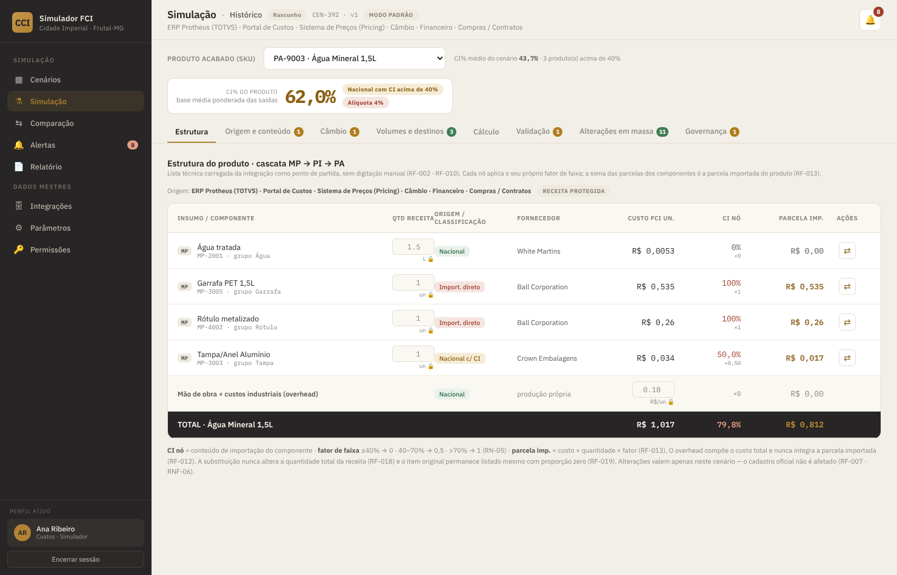
Figura 3 — Estrutura em cascata. Intermediários exibem os próprios insumos em nível subordinado; a coluna CI NÓ mostra o conteúdo e o fator aplicado.
| QTD RECEITA | Quantidade do componente na receita. Fica bloqueada no modo padrão — a receita é protegida. Para alterá-la é preciso o modo avançado (seção 5.9). |
| ORIGEM / CLASSIFICAÇÃO | Como o item é tratado no cálculo: nacional, importado direto, estrangeiro adquirido no mercado interno ou nacional com conteúdo de importação. |
| CUSTO FCI UN. | Valor total de entrada menos ICMS e IPI. Para importados, o valor aduaneiro completo. |
| CI NÓ · ×fator | Conteúdo de importação do componente e o multiplicador da faixa (0 · 0,5 · 1) aplicado na cascata. |
| PARCELA IMP. | custo × quantidade × fator — o quanto aquele componente leva para o numerador do CI%. |
4Substituir um componenteRF-015 a RF-024
A estrutura não oferece exclusão livre de componente: toda troca acontece pela ação
orientada de substituição, no botão ⇄ da linha. O assistente tem quatro passos:
- Tipo de substituição. Integral — o substituto assume 100% e o item original
permanece listado com proporção zero, identificado como não utilizado.
Parcial — você informa a proporção de um item e a do outro é complementada
automaticamente para totalizar 100%.
- Item substituto. As alternativas do mesmo grupo de insumo aparecem primeiro.
Cada opção indica a natureza da troca: mesmo grupo, nacional ↔ importado, troca de fornecedor.
Produto intermediário só pode ser trocado por outro intermediário.
- Proporção. A tabela mostra original e substituto lado a lado com a
quantidade calculada de cada um — a soma é sempre igual à quantidade original da receita.
- Prévia do efeito. Antes de confirmar, o painel mostra CI% atual → CI% simulado,
a faixa resultante e a variação em pontos percentuais, atualizando em tempo real
conforme você muda o substituto ou a proporção.
Depois de aplicada, a substituição aparece como duas linhas de alternativa sob o componente,
com a proporção editável. No rodapé estão Normalizar para 100% (quando a soma desvia),
Ajustar substituição e Reverter ao original — a reversão devolve o componente
original a 100% sem deixar alternativas residuais.
Confronto imediato. Se uma alteração deixar a estrutura inconsistente, o sistema avisa
no momento da edição — não só no cálculo final — listando o que ficou errado e oferecendo
Desfazer alteração ou Manter e corrigir.
5.3 · Simulação ▸ Origem e conteúdo
Onde o Fiscal define como cada insumo é tratado. Fiscal · Controladoria
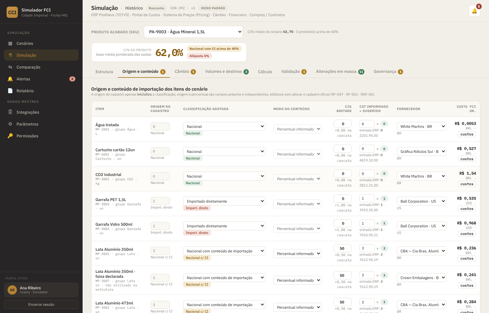
Figura 4 — Classificação do item, origem do cadastro, conteúdo adotado e CST sugerido.
- Origem do cadastro — o valor vindo do ERP (campo de origem do item). É exibido como
referência: quando diverge da classificação adotada, o sistema sinaliza, mas
não bloqueia.
- Classificação adotada — nacional · importado diretamente · estrangeiro adquirido no
mercado interno · nacional com conteúdo de importação. Importado direto e estrangeiro no
mercado interno entram com conteúdo integral.
- Conteúdo de importação — para itens com CI você escolhe entre informar o
percentual ou aplicar a faixa. O CI adotado é exibido por item.
- CST sugerido — acompanha a classificação e a faixa. Se o CST informado divergir do
sugerido, aparece um aviso com o valor esperado.
- Item nacional tem os campos de conteúdo e de custo de importação bloqueados.
Origem e percentual são variáveis distintas, em campos próprios e editáveis de forma
independente: a origem do cadastro serve de filtro e referência, e não determina sozinha o
conteúdo usado na simulação.
5.4 · Simulação ▸ Câmbio
Onde Compras e Financeiro trabalham as hipóteses cambiais. Compras · Controladoria
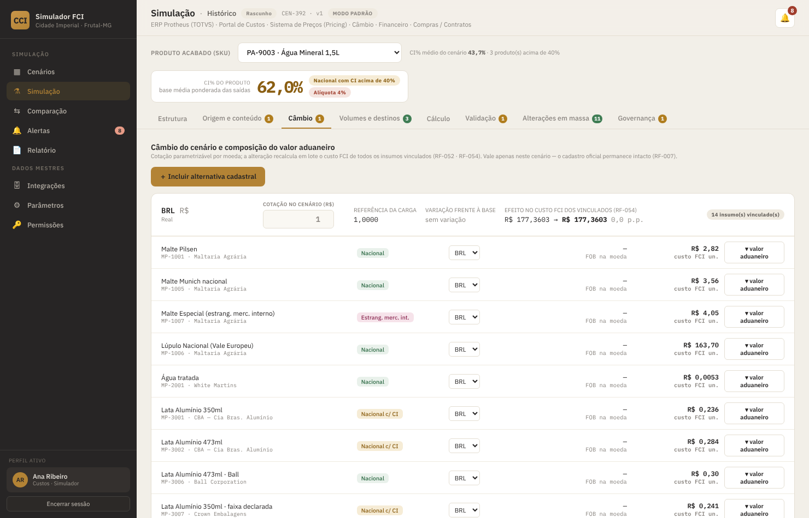
Figura 5 — Cotação por moeda, insumos vinculados e composição do valor aduaneiro.
5Simular uma hipótese de câmbioRF-052 a RF-054
- Localize o cartão da moeda (dólar, euro, libra esterlina ou franco suíço).
- Edite a cotação. O cartão lista os insumos vinculados àquela moeda.
- Ao confirmar, todos os insumos daquela moeda são recalculados em lote e o CI% do
produto no topo da tela se atualiza na hora.
6Compor o valor aduaneiro de um importadoRF-059
Expanda o insumo importado para editar os seis componentes do custo:
- FOB — informado na moeda do insumo e convertido pela cotação do cenário;
- Frete internacional e seguro internacional;
- II (imposto de importação), IPI de importação e PIS/COFINS de importação.
A soma é o custo FCI do insumo importado. FOB, frete e seguro são preenchidos manualmente no
cenário enquanto não houver origem sistêmica segregada.
7Incluir uma alternativa cadastralRF-055
Para avaliar um fornecedor ou item que ainda não existe na operação, use
Incluir alternativa cadastral. O item é criado dentro do cenário, marcado como
alternativa, e não aparece nos demais cenários nem no cadastro oficial.
5.5 · Simulação ▸ Volumes e destinos
Onde o denominador do CI% é construído. Pricing · Controladoria
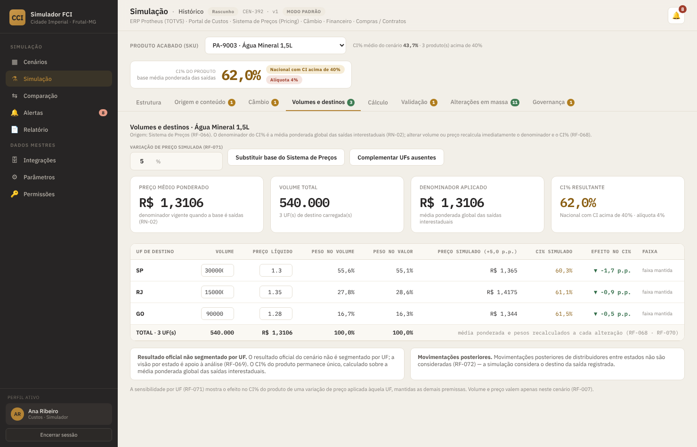
Figura 6 — Volumes e preços por UF, peso de cada destino e sensibilidade de preço.
- Volume e preço por UF — editáveis. Qualquer alteração recalcula imediatamente o
denominador e o CI%.
- Peso de cada UF — participação no volume; os pesos somam 100%.
- Sensibilidade — o efeito no CI% de uma variação de preço definida, por UF. Serve para
identificar em quais estados um ajuste de preço muda o enquadramento.
- Carga do Sistema de Preços — duas ações distintas: substituir a base (troca
todas as saídas do produto) ou complementar as UFs ausentes (mantém o que você já ajustou).
O resultado oficial do cenário não é segmentado por UF — ele usa a média ponderada
nacional. A visão por estado é apoio à análise. Movimentações posteriores de distribuidores entre
estados não são consideradas.
5.6 · Simulação ▸ Cálculo
Onde o resultado é demonstrado e auditado.
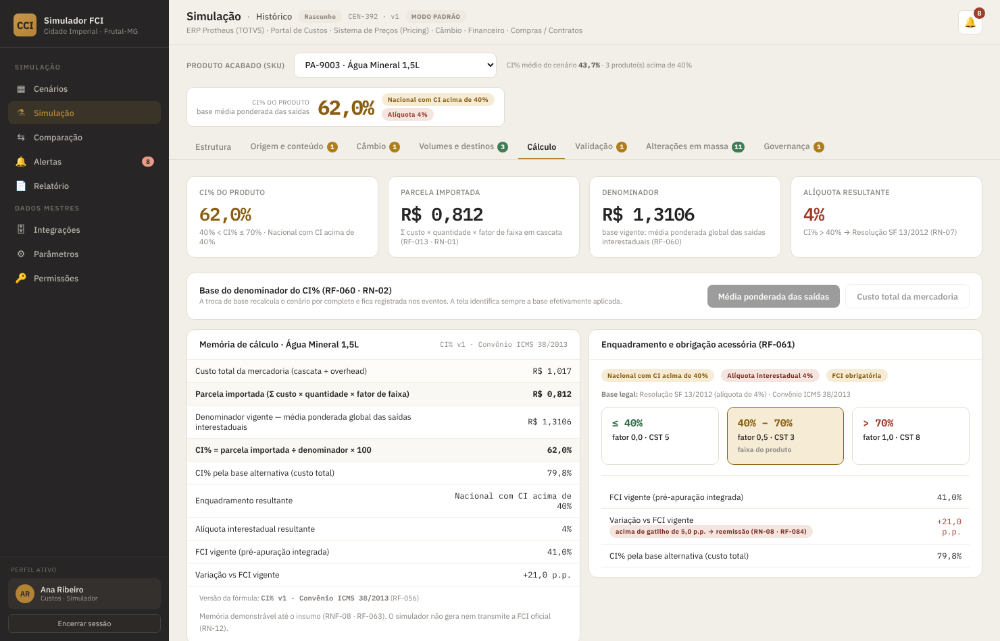
Figura 7 — Memória de cálculo, enquadramento, simulação de ICMS-ST e componentes de maior contribuição.
8Ler a memória de cálculoRF-056 · RNF-08
A memória demonstra o cálculo linha a linha, até o nível do insumo:
- Custo total da mercadoria (cascata + overhead);
- Parcela importada (Σ custo × quantidade × fator de faixa);
- Denominador vigente, com a base identificada;
- CI% = parcela importada ÷ denominador × 100;
- CI% pela base alternativa, enquadramento, alíquota, FCI vigente e variação em p.p.
A versão da fórmula fica registrada no cenário e exibida junto da memória.
9Alternar a base do denominadorRF-060
Controladoria O denominador padrão é a média ponderada global
das saídas interestaduais. A alternativa é o custo total da mercadoria. A troca
recalcula o CI% de todo o cenário e a base vigente passa a ser identificada na tela.
Quando um produto não tem saídas carregadas, o cálculo recai automaticamente
sobre o custo total e a tela informa isso — o número nunca fica indefinido.
10Avaliar o impacto tributárioRF-061 · RF-062
O bloco de enquadramento mostra a faixa e a alíquota interestadual resultante:
CI% acima de 40% leva a 4%; abaixo, 7% ou 12% conforme o destino.
A simulação de ICMS-ST compara o ICMS próprio e o ICMS-ST nas duas alíquotas, com
MVA e alíquota interna parametrizáveis.
A carga tributária total tende a ser a mesma: o que muda é a divisão
entre o ICMS próprio (crédito aproveitável pelo cliente) e o ICMS-ST retido para o destino.
É por isso que o CI% acima de 40% afeta a competitividade mesmo sem aumentar a carga total.
Componentes de maior contribuição ordena os componentes pela participação na parcela
importada, com destaque para o maior — é o atalho para saber onde atacar primeiro.
5.7 · Simulação ▸ Validação
O painel de diagnóstico reúne todos os erros e avisos do cenário, separando o que bloqueia
do que apenas alerta, e indicando o produto ou o cadastro de origem de cada ocorrência.
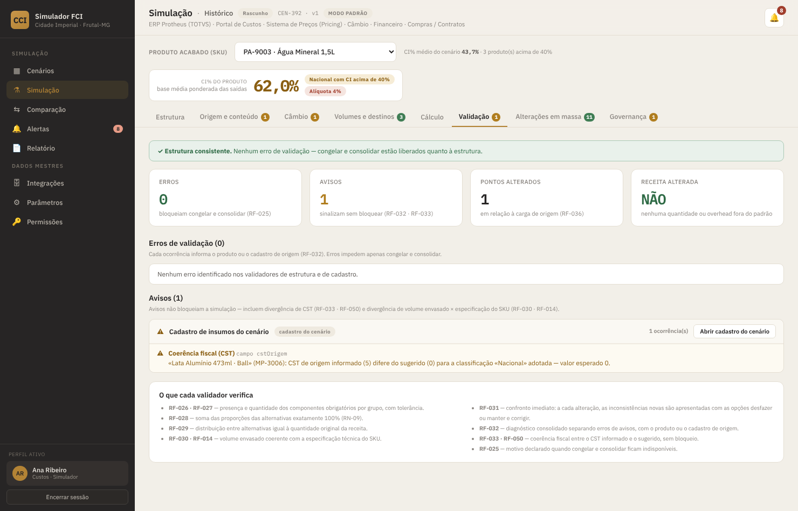
Figura 8 — Diagnóstico consolidado: erros bloqueiam a consolidação; avisos apenas sinalizam.
| Verificação | Tipo | O que significa |
|---|
| Componente obrigatório ausente | Erro | Um grupo exigido pela receita não está na estrutura; a mensagem nomeia o grupo e a quantidade esperada |
| Quantidade por grupo | Erro | A quantidade total do grupo difere da receita além da tolerância — uma embalagem que exige 12 tampas não é aceita com 11 |
| Soma das proporções | Erro | As alternativas de um componente não somam exatamente 100% |
| Distribuição vs original | Erro | A distribuição ficou acima ou abaixo da quantidade original da receita; a mensagem declara o sentido do desvio |
| Integridade técnica do SKU | Aviso | O volume envasado diverge da especificação técnica do produto |
| Coerência fiscal | Aviso | O CST informado difere do sugerido pela classificação adotada; a mensagem traz o valor esperado |
| Custo indeterminado | Erro | Insumo importado sem FOB, ou insumo nacional sem preço de entrada |
Havendo erro, as ações Consolidar e Congelar ficam indisponíveis e o motivo é
declarado na tela. Avisos não bloqueiam — são pontos de atenção para a decisão.
5.8 · Simulação ▸ Alterações em massa
Aplica a mesma troca a todas as estruturas que usam um grupo de insumo — todas as tampas, todas
as latas, todos os maltes. Custos · Compras · Pricing · Controladoria
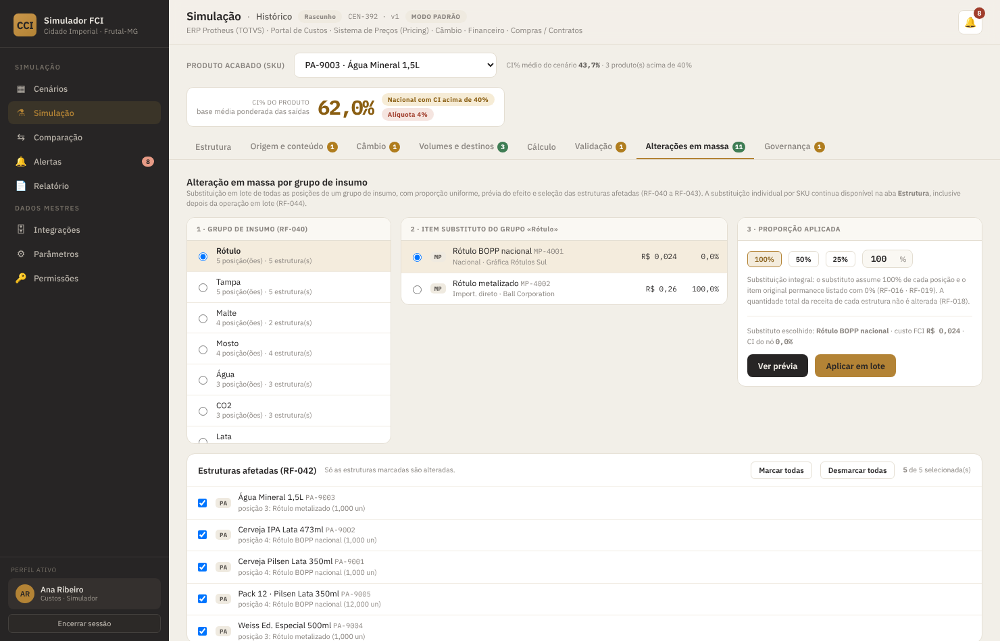
Figura 9 — Operação em lote por grupo de insumo, com prévia do impacto antes de aplicar.
11Executar uma alteração em loteRF-040 a RF-045
- Grupo de insumo — ao escolher, o sistema relaciona todas as posições da ficha
técnica que o utilizam e quantas estruturas serão tocadas.
- Item substituto do grupo.
- Proporção do substituto (100% para troca integral; use os presets para 50% ou 25%).
- Selecione as estruturas — apenas as marcadas são alteradas; as demais permanecem intactas.
- Ver prévia — mostra, por produto, o CI% antes e depois, a variação em p.p. e se há
mudança de faixa.
- Aplicar em lote.
Quando o substituto já é o item original de todas as estruturas selecionadas,
a ação fica indisponível com a indicação de que não há substituição a realizar.
A substituição individual por SKU continua disponível na aba Estrutura, mesmo depois de usar
a operação em lote.
5.9 · Simulação ▸ Governança
Concentra modo de trabalho, validação técnica, congelamento e consolidação.
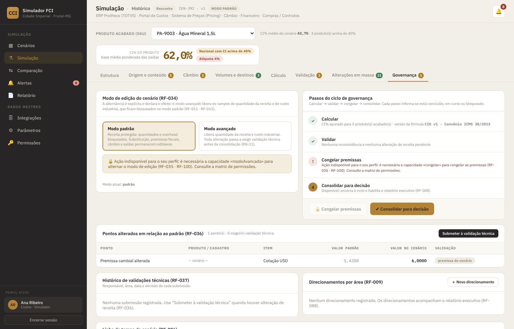
Figura 10 — Governança do cenário: modo, pontos alterados, validação técnica e o caminho até a consolidação.
12Ativar o modo avançadoRF-034 · RF-035
Industrial · PCP · Controladoria No modo padrão a receita é
protegida: a quantidade de cada componente e o custo industrial ficam bloqueados, e toda troca
passa pela ação de substituição. O modo avançado libera esses campos.
A alternância é explícita e fica registrada. Perfil sem permissão não ativa o modo avançado e
recebe a indicação do impedimento.
13Submeter à validação técnicaRF-036 a RF-038
- A lista de pontos alterados mostra cada mudança com o valor padrão (o que veio
do ERP) e o valor no cenário.
- Clique em Submeter à validação técnica. A submissão congela essa lista.
- Um perfil validador (SGI/CGI, Industrial, PCP ou Controladoria) aprova ou reprova,
com notas. A decisão fica registrada com responsável, área e data, visível no cenário.
Cenário em modo avançado com alteração de receita não aprovada não pode ser consolidado.
14Congelar e consolidarRF-005 · RF-008
- Congelar premissas Controladoria — trava todos os campos
para rastreabilidade. Qualquer alteração posterior exige criar uma nova versão.
- Consolidar para decisão Custos · Controladoria · Negócio
— marca o cenário como calculado e apto à decisão executiva. É recusada se houver erro de
validação pendente ou alteração de receita não aprovada.
A linha do tempo no rodapé registra cada evento — criação, carga, edição, duplicação,
mudança de status — com autor, data e as versões derivadas do cenário.
5.10 · Comparação e análise assistida
Coloca lado a lado até dez cenários e explica as diferenças.
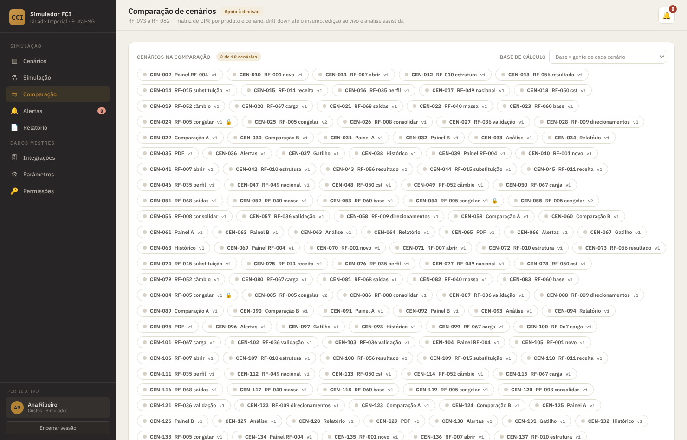
Figura 11 — Matriz de CI% por produto e cenário, com faixa por cor, amplitude da linha e drill-down até o insumo.
15Montar a comparaçãoRF-073 · RF-074
- Clique nos chips de cenário no topo para incluir ou excluir — o efeito é imediato.
O limite é de dez cenários simultâneos.
- A matriz mostra os produtos nas linhas e os cenários nas colunas. Cada célula traz
o CI% com a cor da faixa e a alíquota resultante.
- A última coluna traz a amplitude da linha em pontos percentuais — a diferença entre
o maior e o menor CI% daquele produto entre os cenários. Ordene por ela para achar onde a
decisão mais pesa.
16Abrir o produto até o insumoRF-075 · RF-076
Clique numa célula para colocar o produto em foco. Abaixo da matriz, a árvore de
drill-down expande produto → componentes → insumos dos intermediários. Itens sem nível
inferior não apresentam ação de expansão.
Cada nó mostra a contribuição em pontos percentuais. No nível do produto, as
contribuições somam exatamente o CI% apresentado (o sistema exibe a conferência). Nos
níveis inferiores, a base passa a ser o próprio intermediário — a ressalva é declarada no nó.
17Editar sem sair da comparaçãoRF-077 a RF-079
O gráfico comparativo mostra o CI% do produto em foco em cada cenário, com a linha de
40% marcada. Trocar o produto em foco atualiza o gráfico e as faixas.
Clicando no cabeçalho de um cenário abre o painel lateral com os parâmetros editáveis:
câmbio, classificação e conteúdo dos insumos, preço de entrada, preço de saída e proporções de
substituição. Cada alteração recalcula a matriz na hora, sem recarregar a tela — só as
colunas daquele cenário mudam.
18Usar a análise assistidaRF-080 a RF-082
O painel de análise assistida responde perguntas sobre os cenários selecionados,
citando produtos, cenários e valores reais da simulação, e mantém o histórico da conversa.
As sete análises padrão, disponíveis como atalhos:
| Análise | Responde |
|---|
| Divergência de CI% entre cenários | Quais produtos mais divergem e quais mudam de faixa |
| Insumos de maior impacto | Quais componentes concentram a parcela importada |
| Risco fiscal e reemissão | Quantos produtos estão acima de 40% e quais exigem reemissão |
| Sensibilidade cambial | Efeito de uma variação em cada moeda sobre o CI% |
| Caminho para ficar abaixo de 40% | As trocas mínimas, em ordem de impacto, para reenquadrar o produto |
| Efeito de preço e mix de UF | Peso de cada destino e qual UF mais move o resultado |
| Recomendação executiva | Síntese do cenário com direcionamentos por área |
Você também pode digitar uma pergunta livre — por exemplo “qual o efeito do dólar no
resultado?” — e o sistema direciona para a análise correspondente.
Toda resposta traz a ressalva de que a análise tem caráter gerencial, sem validade
fiscal.
5.11 · Alertas
Reúne o que exige atenção fiscal no cenário, cada item com a área responsável pelo
tratamento.
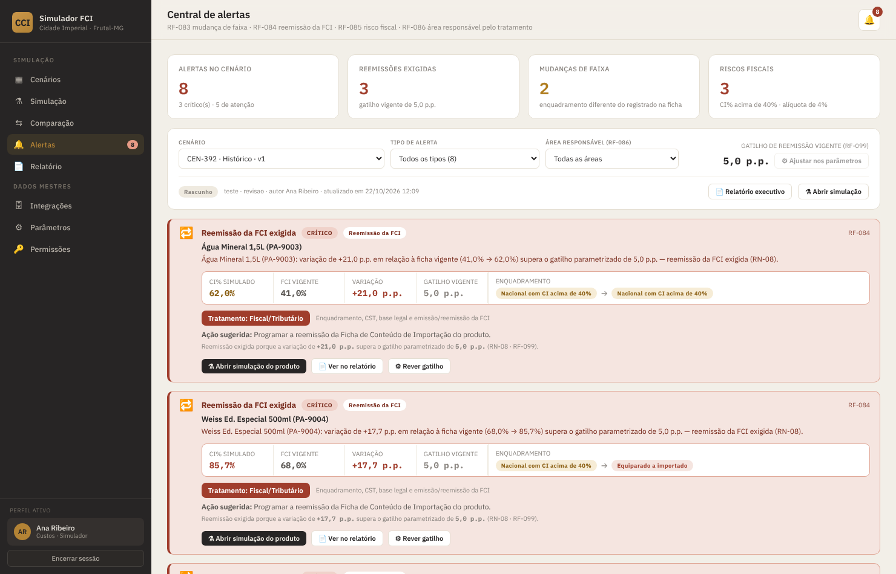
Figura 12 — Alertas de mudança de faixa, reemissão da FCI e risco fiscal, com a área de encaminhamento.
| Alerta | Quando aparece | O que informa |
|---|
| Mudança de faixa | O enquadramento simulado difere do da FCI vigente | A faixa anterior, a nova faixa e os percentuais |
| Reemissão da FCI | A variação do CI% supera o gatilho parametrizado (padrão 5 p.p.) | O produto, a variação em p.p. e o gatilho aplicado |
| Risco fiscal | CI% acima de 40% | A base legal e o efeito tributário, incluindo o impacto no crédito do cliente |
| FCI passa a ser obrigatória | Produto sem conteúdo na ficha vigente passa a ter CI% | A obrigatoriedade de emissão da ficha |
O gatilho de reemissão é parametrizável pela TI em Parâmetros. Alterá-lo muda
imediatamente os alertas gerados — é assim que o Fiscal calibra a sensibilidade do monitoramento.
5.12 · Relatório e exportação em PDF
O documento que vai para a decisão executiva.
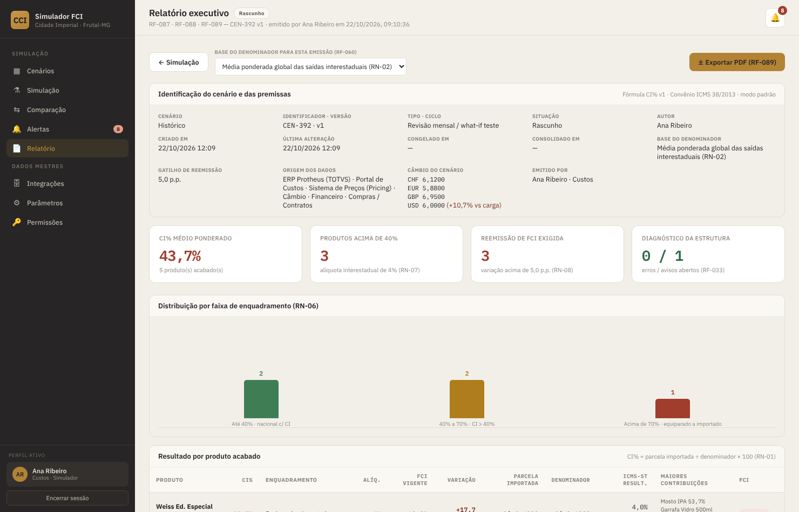
Figura 13 — Relatório executivo: identificação do cenário, resultado por produto e direcionamentos por área.
O relatório traz:
- Identificação — cenário, código, ciclo, tipo, versão, status, autor, data de emissão,
origem dos dados, base de cálculo do denominador, versão da fórmula e o
câmbio adotado por moeda.
- Indicadores — CI% médio ponderado, produtos, produtos acima de 40% e distribuição por faixa.
- Resultado por produto — CI%, enquadramento, alíquota, FCI vigente, variação em p.p.,
obrigatoriedade da FCI e se a reemissão é exigida.
- Direcionamentos por área — blocos distintos para Compras, Pricing e
Fiscal/Tributário. Além dos direcionamentos gerados pelo próprio resultado, você pode
acrescentar direcionamentos manuais.
- Alertas do cenário com a área responsável.
O botão Exportar PDF gera o arquivo com cabeçalho e rodapé de identificação do
cenário e da versão em todas as páginas, pronto para circular. O nome do arquivo segue o
padrão Relatorio_FCI_CEN-001_v1.pdf.
5.13 · Integrações (TI)
Administrador · TI Os dados mestres do simulador vêm de integrações
com bases externas, configuradas aqui. Demais perfis acessam em modo consulta.
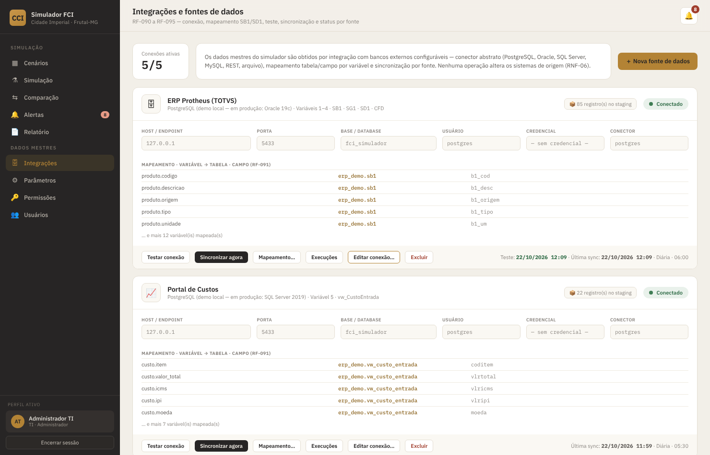
Figura 14 — Fontes de dados: conexão, mapeamento variável → tabela · campo, teste, sincronização e status.
20Configurar uma fonte de dadosRF-090 a RF-095
- Editar conexão — host/endpoint, porta, base, usuário e credencial. O
conector define o tipo de origem: PostgreSQL, Oracle (Protheus), SQL Server,
MySQL, REST ou arquivo. A credencial é armazenada cifrada e nunca é exibida em texto
claro.
- Mapeamento — cada variável do simulador aponta a tabela e o campo de origem
(por exemplo
produto.codigo → SB1.B1_COD, produto.origem →
SB1.B1_ORIGEM, cst.cst → SD1.D1_CLASFIS).
- Testar conexão — retorna o resultado, atualiza o status e registra o momento da
verificação.
- Sincronizar agora — executa a carga manual. A frequência programada (manual, 15
minutos, horária ou diária com horário) fica visível no cartão.
Falha não para a operação. Se uma integração falhar, ela é destacada em erro, mas a
última carga válida permanece disponível e os cenários continuam operáveis. Nenhuma operação
do simulador altera as bases de origem — os conectores apenas leem.
5.14 · Parâmetros mestres (TI)
Administrador · TI
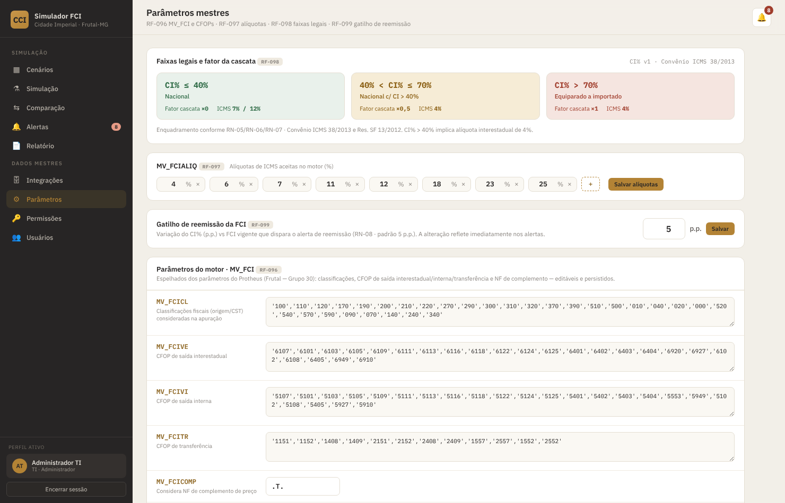
Figura 15 — Faixas legais, alíquotas de ICMS, gatilho de reemissão e parâmetros MV_FCI.
| Faixas legais | As três faixas com limite, fator de cascata (0 · 0,5 · 1) e alíquota associada |
| MV_FCIALIQ | Relação de alíquotas de ICMS aceitas pelo motor — é possível incluir, alterar e excluir |
| Gatilho de reemissão | Variação do CI% em pontos percentuais que dispara o alerta de reemissão (padrão 5 p.p.) |
| Parâmetros MV_FCI | Classificações fiscais, CFOP de saída interestadual, interna e de transferência, NF de complemento e processamento |
| Moedas | Dólar, euro, libra esterlina e franco suíço, com a cotação base |
5.15 · Permissões
Mostra a matriz de permissões por área e perfil, com o seu perfil destacado. Use para
descobrir quem pode executar uma ação que está bloqueada para você.
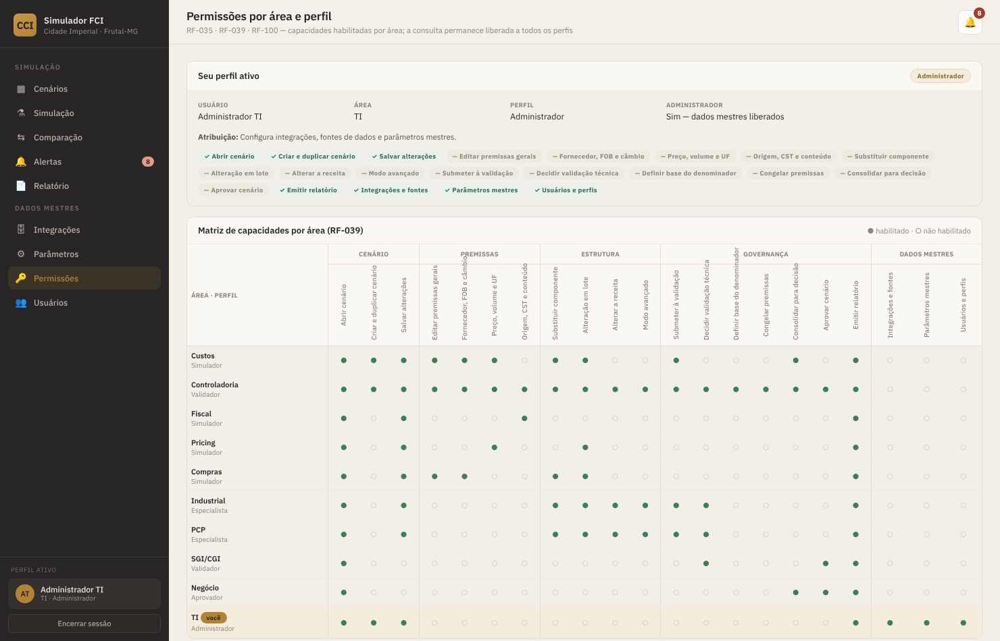
Figura 16 — Matriz de permissões: áreas nas linhas, capacidades nas colunas, perfil ativo destacado.
5.16 · Usuários (TI)
Administrador · TI Cadastro de usuários, com a área que define o
perfil e as permissões. O perfil é derivado automaticamente da área.
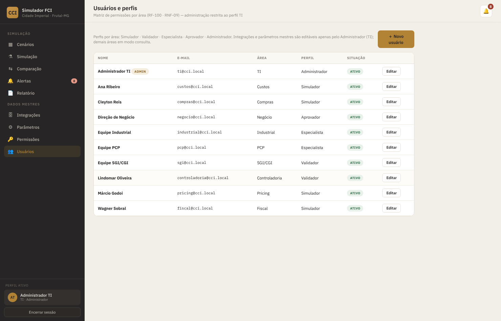
Figura 17 — Administração de usuários e perfis.
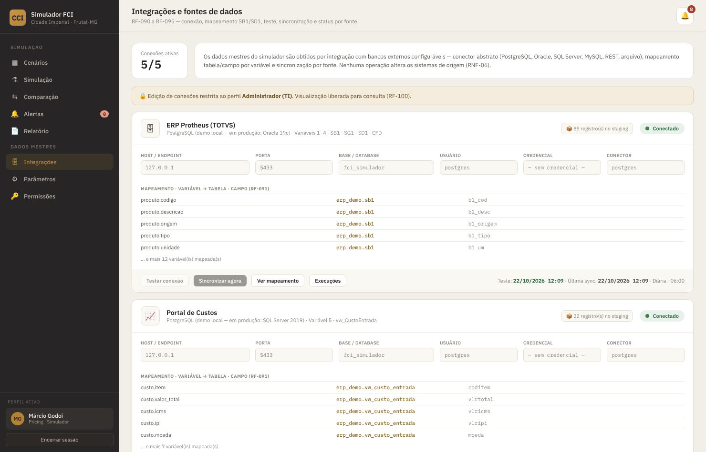
Figura 18 — Perfil sem permissão de administração: a tela abre em modo consulta, com o motivo declarado e as ações desabilitadas.
6 · Receitas de uso
A“Este produto está acima de 40%. O que fazer?”
- Abra o cenário e selecione o produto na faixa superior da Simulação.
- Vá em Cálculo e veja os componentes de maior contribuição — o primeiro da
lista é o que mais pesa.
- Vá em Comparação ▸ Análise assistida e peça
“Caminho para ficar abaixo de 40%”: o sistema lista, em ordem de impacto, quais
componentes precisam ser nacionalizados e qual CI% resulta de cada troca.
- Volte à aba Estrutura, clique em ⇄ no componente indicado e use a
prévia para confirmar o efeito antes de aplicar.
- Se a troca valer para vários SKUs, use Alterações em massa pelo grupo do insumo.
B“Quero testar um câmbio de estresse”
- Em Cenários, duplique o cenário base (botão ⎘) — a origem fica preservada.
- Renomeie mentalmente a nova versão como o cenário de estresse e abra-a.
- Em Câmbio, eleve a cotação das moedas. Todos os insumos vinculados são recalculados.
- Vá em Comparação, selecione os dois cenários e leia a amplitude em p.p. de
cada produto — e quais mudam de faixa.
- Peça a análise “Sensibilidade cambial” para quantificar a exposição por moeda.
C“Preciso saber quais produtos exigem reemissão da FCI”
- Confirme com a TI o gatilho vigente em Parâmetros (padrão 5 p.p.).
- Abra Alertas e filtre por Reemissão da FCI.
- Cada alerta traz o produto, a FCI vigente, o CI% simulado, a variação em p.p. e a área
responsável.
- Gere o Relatório e exporte em PDF para formalizar o encaminhamento.
D“Preciso alterar a quantidade da receita”
- Em Governança, ative o modo avançado (perfis Industrial, PCP ou Controladoria).
- Volte a Estrutura e edite a quantidade — agora liberada.
- Retorne a Governança: a alteração aparece na lista de pontos alterados, com o
valor padrão e o valor no cenário.
- Clique em Submeter à validação técnica.
- Um validador (SGI/CGI, Industrial, PCP ou Controladoria) aprova ou reprova.
- Só depois da aprovação o cenário pode ser consolidado.
7 · Perguntas frequentes
Alterei um cenário e o número não mudou. Por quê?
Verifique se o componente alterado tem fator de faixa zero: itens com CI até 40% entram na
cascata com fator 0 e não contribuem para a parcela importada. Verifique também se a alteração foi
em um produto diferente do que está selecionado na faixa superior.
O botão que preciso está desabilitado.
Passe o mouse sobre ele: o sistema informa a permissão que falta e quais áreas a possuem.
Consulte a tela Permissões e peça à TI a inclusão do seu usuário na área correta.
Não consigo consolidar o cenário.
Há duas causas possíveis, ambas declaradas na tela: (a) existe erro de validação de
estrutura pendente — resolva na aba Validação; ou (b) o cenário tem alteração de receita não
aprovada — submeta à validação técnica e aguarde a decisão.
O cenário está congelado e preciso mudar uma premissa.
Premissas congeladas não são editáveis — é o que garante a rastreabilidade. Use
Nova versão (ou duplique em Cenários): a nova versão nasce em Rascunho mantendo o vínculo
com a anterior.
Uma integração está em erro. Posso continuar trabalhando?
Sim. A integração em erro é destacada, mas a última carga válida permanece disponível e os
cenários continuam operáveis sobre esses dados. Avise a TI para restabelecer a conexão.
O CI% do produto ficou calculado sobre o custo, não sobre as saídas.
Isso ocorre quando o produto não tem volumes e preços por UF carregados. A tela identifica a base
efetivamente usada. Carregue as saídas em Volumes e destinos (ação “Complementar UFs
ausentes” ou “Substituir base”).
Posso excluir um componente da estrutura?
No modo padrão, não — a receita é protegida e toda troca acontece pela ação de substituição,
que preserva a quantidade original e mantém o item original visível. Exclusões livres pertencem ao
modo avançado e exigem validação técnica.
O que a análise assistida pode e não pode fazer?
Ela responde sobre os cenários selecionados citando produtos, cenários e valores reais da
simulação. Tem caráter gerencial, sem validade fiscal, e não substitui a análise do time
tributário.
8 · Glossário
| Termo | Definição adotada |
|---|
| FCI | Ficha de Conteúdo de Importação — declaração do percentual de conteúdo importado de mercadoria industrializada no país |
| CI% | Conteúdo de Importação: razão entre a parcela importada e o denominador parametrizado, em percentual |
| Parcela importada | Somatório do custo FCI dos componentes importados, multiplicado pela quantidade e pelo fator de faixa aplicável |
| Custo FCI | Valor total de entrada do insumo deduzidos ICMS e IPI. PIS e COFINS não deduzem |
| Valor aduaneiro | FOB convertido pelo câmbio + frete e seguro internacional + II + IPI e PIS/COFINS de importação |
| Fator de faixa | Multiplicador aplicado ao custo do componente na cascata conforme a sua faixa de CI: 0 · 0,5 · 1 |
| Cascata | Propagação do cálculo matéria-prima → produto intermediário → produto acabado |
| Cenário | Conjunto isolado e versionado de premissas, estruturas e resultados de uma simulação |
| Grupo de insumo | Agrupamento funcional de itens intercambiáveis (maltes, lúpulos, latas, tampas, rótulos, mostos) |
| Denominador | Base de divisão do CI%: saída média ponderada nacional (padrão) ou custo total da mercadoria |
| Overhead | Mão de obra e custos industriais do produto. Compõem o custo total e não integram a parcela importada |
| p.p. | Pontos percentuais — a diferença absoluta entre dois percentuais |
| MVA | Margem de Valor Agregado, usada na base de cálculo do ICMS-ST |
| ICMS-ST | ICMS por substituição tributária, retido em favor do estado de destino |
9 · Base legal
- Resolução do Senado Federal 13/2012 — alíquota interestadual de 4% para mercadorias com
conteúdo de importação superior a 40%.
- Convênio ICMS 38/2013 — define o conteúdo de importação e a Ficha de Conteúdo de
Importação.
- Ajuste SINIEF 19/2012 — procedimentos de preenchimento e entrega da FCI.
- Lei Complementar 87/1996 (Lei Kandir) — regras gerais do ICMS.
Ressalva final. O Simulador FCI é ambiente de simulação gerencial, sem validade fiscal. Não
substitui a Ficha de Conteúdo de Importação oficial, não gera transmissão a órgão fiscal e não
constitui apuração tributária. Os resultados apoiam decisões de custo, preço e suprimentos,
sujeitos à validação do time tributário.